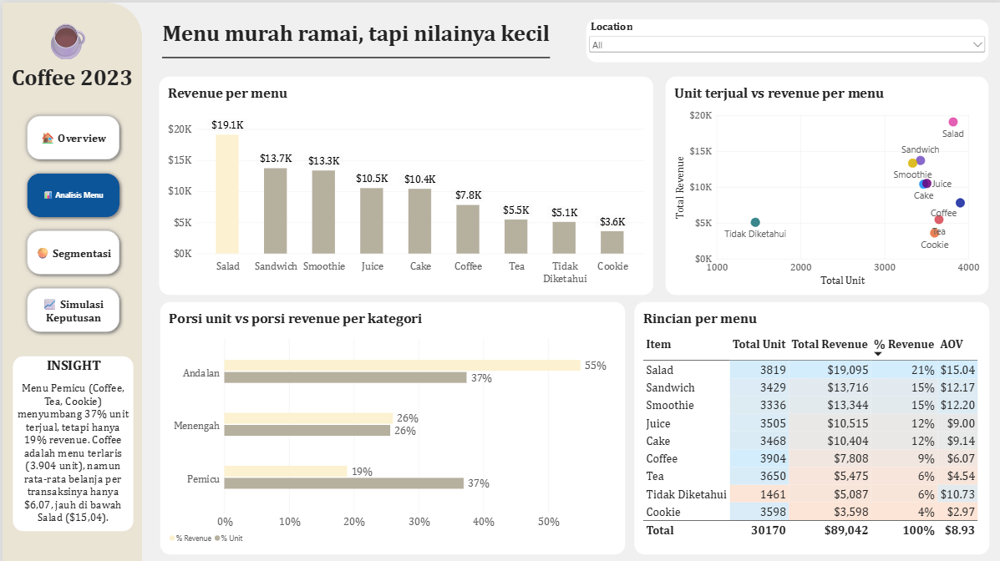
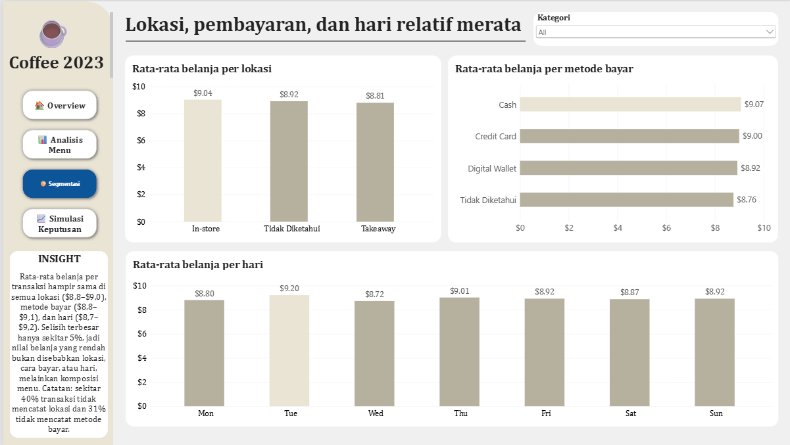
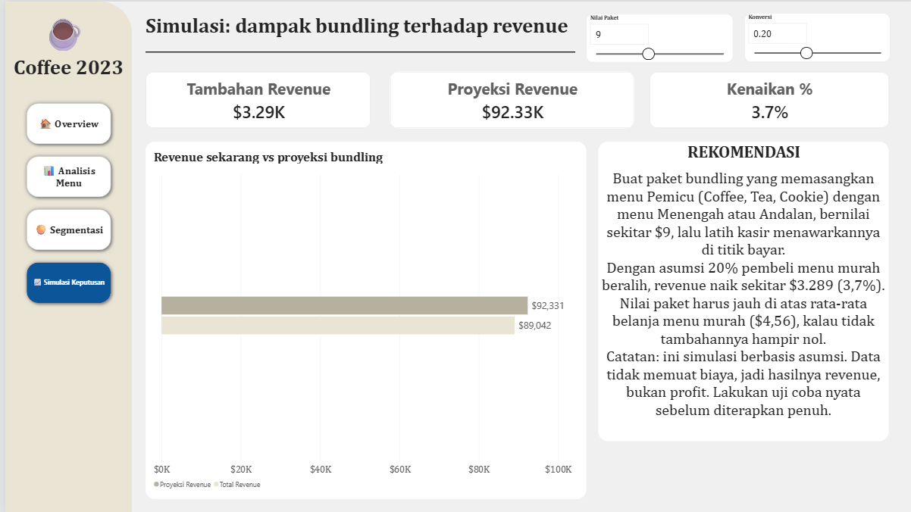

Ringkasan Proyek
Proyek ini menganalisis 10.000 transaksi penjualan kafe selama 2023 untuk menjawab satu pertanyaan bisnis: bagaimana menaikkan nilai belanja per transaksi tanpa menambah jumlah pelanggan?
Data mentahnya sengaja "kotor" (banyak nilai kosong, ERROR, dan UNKNOWN), sehingga proyek ini mencakup seluruh alur: pembersihan data di Power Query, pemodelan data, analisis dengan DAX, dashboard interaktif empat halaman, dan rekomendasi keputusan.
Temuan utama:
- Revenue stagnan di kisaran $6,6K–$7,4K per bulan sepanjang 2023, tanpa tren naik.
- Menu murah (Coffee, Tea, Cookie) menyumbang 37% unit terjual tetapi hanya 19% revenue.
- Lokasi, metode bayar, dan hari relatif merata (selisih terbesar sekitar 5%). Perbedaan nilai belanja lebih terkait komposisi menu daripada faktor-faktor tersebut.
- Simulasi bundling: jika 20% pembeli menu murah beralih ke paket senilai $9, revenue naik sekitar $3.289 (3,7%).
Pembersihan Data (Power Query) → Pemodelan Data → Measure DAX → Dashboard 4 Halaman → Simulasi What-If → Rekomendasi
Masalah Bisnis
Pertanyaan utama: bagaimana menaikkan rata-rata nilai transaksi (AOV) dan revenue tanpa menambah jumlah pelanggan?
| No. | Pertanyaan turunan | Dijawab di |
|---|---|---|
| 1 | Bagaimana kondisi revenue sepanjang 2023? | Overview |
| 2 | Menu mana yang menyumbang revenue terbesar? | Analisis Menu |
| 3 | Menu mana yang ramai terjual tetapi kontribusinya kecil? | Analisis Menu |
| 4 | Apakah lokasi memengaruhi nilai belanja? | Segmentasi |
| 5 | Apakah metode pembayaran memengaruhi nilai belanja? | Segmentasi |
| 6 | Apakah hari tertentu berbeda? | Segmentasi |
| 7 | Berapa potensi tambahan revenue dari bundling? | Simulasi Keputusan |
Deskripsi Dataset
| Item | Keterangan |
|---|---|
| Nama | Dirty Cafe Sales |
| Ukuran | 10.000 baris, 8 kolom |
| Periode | Januari – Desember 2023 |
| Satuan | Dolar AS (USD) |
| Sifat | Data sintetis untuk latihan pembersihan data |
| Sumber | Cafe Sales - Dirty Data for Cleaning Training (Kaggle) |
Kolom: Transaction ID, Item, Quantity, Price Per Unit, Total Spent, Payment Method, Location, Transaction Date.
Catatan: karena datanya sintetis, kesimpulan di proyek ini menunjukkan cara analisisnya, bukan fakta tentang kafe sungguhan.
Proses Pembersihan Data
Seluruh pembersihan dilakukan di Power Query. Prinsipnya: nilai yang hilang dipulihkan dari hubungan antar kolom, bukan ditebak.
| Masalah | Penanganan |
|---|---|
ERROR dan UNKNOWN | Diubah menjadi kosong |
| Harga satuan kosong | Dipulihkan dari tabel harga menu, atau dari Total ÷ Jumlah |
| Jumlah kosong | Dipulihkan dari Total ÷ Harga |
| Total belanja kosong | Dipulihkan dari Jumlah × Harga |
| Nama menu kosong | Dipulihkan dari harga bila harganya unik (1 = Cookie, 1,5 = Tea, 2 = Coffee, 5 = Salad). Harga 3 dan 4 ambigu, sehingga diberi label "Tidak Diketahui" |
| Lokasi dan metode bayar kosong | Diberi label "Tidak Diketahui" (tidak diisi dengan modus agar tidak menggelembungkan satu kategori) |
| Tanggal kosong (± 460 baris) | Dibiarkan kosong. Baris tidak berurutan berdasarkan tanggal, jadi mengisinya dengan "baris terdekat" berarti mengarang tanggal |
| Total tidak bisa dihitung | 26 baris dibuang (0,26%): 23 tanpa total belanja yang bisa dihitung, 3 tanpa jumlah |
Dasar pemulihan nilai: dari 8.544 baris yang lengkap, Total Spent = Quantity × Price Per Unit berlaku di semua baris tanpa pengecualian. Karena itu nilai yang hilang dihitung tepat dari dua kolom lainnya, bukan ditebak dengan median atau rata-rata, yang justru akan menciptakan penjualan palsu.
Catatan teknis: sel kosong di beberapa kolom ternyata berupa teks kosong (""), bukan null, sehingga rumus pemulihan harus memeriksa keduanya. Tipe data juga diatur dengan locale English (United States), karena data memakai titik sebagai desimal sedangkan komputer berlokasi Indonesia memakai koma.
Hasil akhir: 9.974 baris (99,74% data) siap dianalisis.
Kolom turunan Kategori ditentukan dari harga, bukan nama menu. Cara ini tetap valid untuk menu yang namanya ambigu, karena pasangan yang ambigu selalu berada di kategori yang sama.
| Kategori | Harga | Menu |
|---|---|---|
| Pemicu | ≤ $2 | Coffee, Tea, Cookie |
| Menengah | $3 | Juice, Cake |
| Andalan | $4–$5 | Sandwich, Smoothie, Salad |
Model Data & Measure DAX
cafe_sales: tabel fakta hasil pembersihan (9 kolom).Dim_Date: tabel kalender 1 Januari sampai 31 Desember 2023, ditandai sebagai date table. KolomBulandanHaridiurutkan menurut nomornya, supaya grafik tampil berurutan, bukan menurut abjad.- Relasi:
Dim_Date[Date]kecafe_sales[Transaction Date], satu-ke-banyak, arah filter tunggal. - Simulasi What-If: dua parameter, yaitu
Konversi(0 sampai 0,5) danNilai Paket($5 sampai $15).
Total Revenue = SUM(cafe_sales[Total Spent])
Total Transaksi = COUNTROWS(cafe_sales)
AOV = DIVIDE([Total Revenue], [Total Transaksi])
% Revenue =
DIVIDE([Total Revenue], CALCULATE([Total Revenue], ALLSELECTED(cafe_sales)))
Tambahan Revenue =
[Transaksi Menu Pemicu] * [Konversi Value]
* ([Nilai Paket Value] - [AOV Menu Pemicu])
Proyeksi Revenue = [Total Revenue] + [Tambahan Revenue]
ALLSELECTED dipakai (bukan ALL) pada % Revenue agar persentase tetap berjumlah 100% ketika slicer dipilih.
Temuan per Halaman Dashboard
1 Overview
- Total revenue $89.042 dari 9.974 transaksi, AOV $8,93, dan 30.170 unit terjual.
- Revenue bulanan berkisar $6.644 (Februari) sampai $7.353 (Juni), dengan rata-rata sekitar $7,07K. Tidak ada tren naik.
- Sekitar $4,17K revenue (4,7%) berasal dari transaksi tanpa tanggal tercatat. Hal ini diungkapkan di dashboard lewat kartu tersendiri.
2 Analisis Menu

| Menu | Unit | Revenue | % Revenue | AOV |
|---|---|---|---|---|
| Salad | 3.819 | $19.095 | 21% | $15,04 |
| Sandwich | 3.429 | $13.716 | 15% | $12,17 |
| Smoothie | 3.336 | $13.344 | 15% | $12,20 |
| Juice | 3.505 | $10.515 | 12% | $9,00 |
| Cake | 3.468 | $10.404 | 12% | $9,14 |
| Coffee | 3.904 | $7.808 | 9% | $6,07 |
| Tea | 3.650 | $5.475 | 6% | $4,54 |
| Tidak Diketahui | 1.461 | $5.087 | 6% | $10,73 |
| Cookie | 3.598 | $3.598 | 4% | $2,97 |
| Kategori | % Unit | % Revenue |
|---|---|---|
| Andalan | 37% | 55% |
| Menengah | 26% | 26% |
| Pemicu | 37% | 19% |
Coffee adalah menu terlaris (3.904 unit), tetapi AOV-nya hanya $6,07, jauh di bawah Salad ($15,04). Volume penjualan antar menu hampir sama, sedangkan hasil uangnya timpang. Karena kategori ditentukan dari harga, selisih antara porsi unit dan porsi revenue memang wajar. Temuan yang berguna adalah pembeli membeli menu murah dan mahal dalam jumlah yang hampir sama, sehingga ada ruang untuk mendorong pembelian menu bernilai lebih tinggi.
3 Segmentasi

| Dimensi | Rentang AOV |
|---|---|
| Lokasi | $8,8 (Takeaway) sampai $9,0 (In-store) |
| Metode bayar | $8,8 sampai $9,1 (Cash tertinggi) |
| Hari | $8,7 (Rabu) sampai $9,2 (Selasa) |
Selisih terbesar hanya sekitar 5%, sehingga lokasi, cara bayar, dan hari bukan faktor yang menonjol dalam nilai belanja. Perlu dicatat bahwa sekitar 40% transaksi tidak mencatat lokasi dan sekitar 31% tidak mencatat metode bayar, jadi perbandingannya dibaca dengan hati-hati.
4 Simulasi Keputusan

Ada 3.703 transaksi menu Pemicu dengan rata-rata belanja $4,56. Tambahan revenue adalah selisih antara nilai paket dan belanja biasa mereka, bukan seluruh nilai paket. Pada konversi 20%:
| Nilai paket | Tambahan revenue | Kenaikan |
|---|---|---|
| $5 | ± $327 | 0,4% |
| $7 | ± $1.808 | 2,0% |
| $9 | ± $3.289 | 3,7% |
| $12 | ± $5.511 | 6,2% |
| $15 | ± $7.733 | 8,7% |
Pelajarannya: nilai paket harus jauh di atas rata-rata belanja menu murah. Paket senilai $5 hampir tidak menambah apa-apa.
Rekomendasi
- Buat paket bundling: pasangkan menu Pemicu dengan menu Menengah atau Andalan (misalnya Coffee + Cake) dengan nilai sekitar $9.
- Latih kasir menawarkan tambahan di titik bayar (upselling).
- Pertahankan menu murah sebagai pemicu kunjungan, dan dorong Salad, Sandwich, dan Smoothie sebagai menu andalan.
Batasan dan Langkah Lanjutan
- Tidak ada data biaya. Hasilnya revenue, bukan profit. Paket belum tentu menguntungkan sebelum margin dihitung.
- Setiap baris hanya satu menu. Analisis keranjang belanja (menu yang dibeli bersamaan) tidak bisa dilakukan, sehingga pasangan paket perlu diuji.
- Konversi 20% adalah asumsi, bukan prediksi. Dalam praktik, makin mahal paketnya, makin sedikit yang mau, sehingga dua penggeser simulasi tidak sepenuhnya independen.
- Data tidak lengkap: sekitar 40% transaksi tidak mencatat lokasi, sekitar 31% tidak mencatat metode bayar, dan sekitar 4,7% revenue tidak punya tanggal.
- Data sintetis. Temuan menunjukkan metode analisis, bukan fakta tentang kafe nyata.
- Langkah lanjutan: uji coba A/B paket bundling di satu cabang atau periode lalu ukur AOV sebelum dan sesudahnya, hitung profit jika data biaya tersedia, dan analisis keranjang belanja jika data multi-item tersedia.
Skills yang Ditunjukkan
- Membersihkan data kotor dengan memulihkan nilai dari hubungan antar kolom, dan mendokumentasikan keputusan untuk tiap jenis masalah.
- Membangun model data (tabel fakta, tabel kalender, relasi) serta measure DAX untuk KPI, persentase kontribusi, dan simulasi what-if.
- Merancang dashboard empat halaman yang tiap halamannya menjawab satu pertanyaan bisnis, dengan insight dan rekomendasi yang disertai batasan.
Cara Membuka Proyek
- Buka
powerbi/cafe_sales_dashboard.pbixdengan Power BI Desktop. - Jika Power BI meminta lokasi data, buka Transform data → Data source settings, lalu arahkan sumber ke
data/raw/dirty_cafe_sales.csvdi komputer Anda. - Klik Refresh.
Struktur Repository
cafe-sales-powerbi/ ├── README.md ├── data/raw/dirty_cafe_sales.csv ├── powerbi/cafe_sales_dashboard.pbix ├── queries/power_query_cleaning.m ├── dax/measures.dax ├── docs/ │ ├── screenshots/ │ └── dashboard.pdf └── LICENSE
Ingin mendiskusikan proses analitik di balik proyek ini?